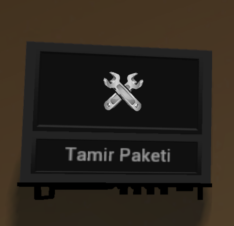

Yasadışı Organizasyonlar
Meslekler
Keko
Şehirde yeni olan ve yüksek hedefleri bulunan kişilerin başlangıç noktasıdır. Arabalar, yatlar ve villalar hayal değil, birer hedeftir. Unutma ki, tüm suçlar ufak bir şekilde başlar.
Çete Üyesi
Şehirde biraz zaman geçirip temelleri kavradıktan sonra, tebrikler! Artık ufak çetelerle gizli yerlerde kara para kazanmanın tam zamanı.
Çete Lideri
Artık arka sokakları tamamen tanıdın. Eskiden senin gibi tecrübesiz gençleri toplayarak bir çete kurmanın tam zamanı. Ne kadar toplu gezmek güvenli hissettirse de, diğer çetelerin ve polislerin dikkatini çekmemeye özen göster.
Mafya Üyesi
Sonunda biraz yaşlandın ve büyüklerin ligine adım attın. Artık basit suçlar ilgini çekmiyor; yeni açılan saksılardan güzel paralar kazanmaya başlayabilirsin.
Mafya Babası
Adı bile yeterli. Bu şehirde mafya babası olmak kolay olmasa da, olduğunda saygınlık beraberinde gelecektir.
Korsan
Artık şehirde değilsin. Burada kendi kuralların var. Gerçek bir korsan ol ve korsan gibi yaşa.
Kaptan
Korsanların başısın. Lüks bir yaşam sürmesen de, kaçak mallarla şehirdekilerden daha rahat bir yaşam sürdüğün kesin.
Eşkiya
Dağa çıkmak kolay olmasa da, burada çok sayıda saksılarınla ürettiğin mahsuller sana iyi bir kazanç sağlayacaktır. Sokağa çıkma yasağında devlete karşı gelerek şehri dar edebilirsin.
Elebaşı
Köyün ağası sensin. Eşkiyaların emirlerine uymak zorundadır. Eğer biri emrine uymuyorsa, ona ceza vermek senin elindedir. Eşkiyalarınla beraber devlete kafa tutmanın eğlenceli bir yolunu keşfet!
Baron
Baron illegalin en tepesindeki kişidir. Tüm mafya, çete ve familyalar ona bağlı çalışmaktadır. İllegaller ona saygı göstermek zorundadır.
Sefir
MoonCity'nin Sefiri, Baron adına şehirdeki illegal eylemleri yürütmekten sorumludur. İllegaller ona saygı göstermek zorundadır.
Bilim Adamı
Bilime adım atmaktan çekinmiyorsun. Sürekli yeni formüller deniyor ve sonunda uyuşturucunun kalitesini artıracak malzemeyi buluyorsun.
Emekli Doktor
Artık yaşını almışsın. Yıllardır çalıştığın hastaneden emekli oldun; paran anca borçlarını kapatmaya yetiyor. Bu durumdan müzdaripsin ve karanlık tarafa geçmeyi kendine hak görüyorsun; bu da en büyük hakkındır.
Rus Mafya Üyesi
Şehirdeki en güçlü güçlerden birinin parçası olmanın gururunu yaşıyorsun. Rus mafyası, gizlilik ve sadakat üzerine kuruludur. Uyuşturucu üretimi yaparak ve kirli dolar basma konusunda yeteneklerinle dikkat çekmeye başladın; artık seni tanıyorlar ve saygı gösteriyorlar.
Rus Mafya Babası
Bu şehirde Rus mafyasının lideri olmak, büyük bir sorumluluktur. Kendi çeteni kurduktan sonra, düşmanlarınla yüzleşmek zorunda kalacaksın. Uyuşturucu üretimi ve kirli dolar üretimi konularında söz sahibi olmanın yanı sıra, düşmanlarına karşı güç gösterileri yapmayı da öğrenmelisin.
İtalyan Mafya Üyesi
İtalyan mafyası, gelenekleri ve aile bağlarıyla tanınır. Artık ailenin bir parçasısın ve yeraltı dünyasının sırlarını öğrenmeye başladın. Uyuşturucu üretimi ve kirli dolar üretimi yaparak, bu dünyanın tehlikeleriyle yüzleşmeyi öğreniyorsun.
İtalyan Mafya Babası
Bir mafya babası olarak, gücünü ve otoriteni kanıtlaman gerekecek. Artık sadece uyuşturucu üretmekle kalmayacak, aynı zamanda kirli dolar üretimiyle de ilgileneceksin. Düşmanların her köşede seni bekliyor; bu yüzden dikkatli olmalısın.
Triads Mafya Üyesi
Triads, tarih ve geleneklerle dolu bir kültüre sahip. Artık bu kültürün bir parçası olarak uyuşturucu üretimi ve kirli dolar üretimi yapıyorsun. Gizli bağlantılarınla, bu karanlık dünyada kendine bir yer edinmeye çalışıyorsun.
Triads Mafya Lideri
Triads'ın lideri olmak, büyük bir sorumluluktur. Artık sadece kendi çeteni değil, tüm örgütü yönetmek zorundasın. Uyuşturucu ve kirli dolar üretimi konusunda uzmanlaşarak, düşmanlarına karşı güçlü bir lider olmalısın. Her kararın, hem seni hem de çetenin kaderini belirleyecek.
Aşiret Üyesi
Aşiretinin bir üyesi olarak, geçmişin ve geleneklerinle gurur duyuyorsun. Uyuşturucu üretimi ve kirli dolar üretimi yaparak, aşiretinin güçlenmesine katkıda bulunuyorsun. Ancak, bu yolda birçok tehlikeyle karşılaşacağının farkındasın.
Aşiret Lideri
Aşiretin artık senin liderliğinde. Uyuşturucu ve kirli dolar üretimi konusundaki deneyimlerinle, diğer aşiretlerle mücadele etmelisin. Sadece gücünü korumakla kalmayacak, aynı zamanda aşiretini de daha ileriye taşımalısın.
Çingene Çetesi Üyesi
Çingeneler, şehirde uyuşturucu üretiminde söz sahibidir. Uyuşturucuları yükseltebilme yeteneğine sahip olarak bu karanlık dünyada yer alabilirsin.
Çingene Çetesi Lideri
Çingene çetesinin lideri olarak, uyuşturucu üretim sürecini yönetmek ve çeteni en iyi şekilde yönlendirmek zorundasın. Uyuşturucuları yükseltmek, seni diğer çetelerden ayıracak önemli bir özellik olacaktır.
Kore Mafyası Üyesi
Kore mafyası, Triadslardan sonra Asya'dan gelen bir güç olarak, şehirde uyuşturucu üretimi yapmaktadır. Uyuşturucuları yükseltme yeteneğinle, bu güçlü gruba katılmanın avantajlarını kullanabilirsin.
Kore Mafyası Lideri
Kore mafyasının lideri olarak, çetenin işlerini yürütmek ve düşmanlarına karşı güçlü bir duruş sergilemek senin sorumluluğunda. Uyuşturucuları yükseltme yeteneğin, seni bu dünyada güçlendirecektir.
Haydut Çetesi Üyesi
Keke Köyü’nün yeni ferdi olarak, artık KEKE Köyünde uyuşturucu üretimi yapma şansına sahipsin. Uyuşturucuları yükseltme becerinle, şehirdeki diğer çetelerle rekabet edebilirsin.
Haydut Çetesi Lideri
Haydut çetesinin lideri olarak, çetenin tüm operasyonlarını yönetmek senin sorumluluğundadır. Uyuşturucu üretimi ve yükseltme süreçlerini kontrol ederek, düşmanlarına karşı sağlam bir duruş sergilemelisin.
Çeçen Mafya Üyesi
Çeçen mafyasının bir üyesi olarak, yüksek seviye printerlarla para üretimi yapma fırsatına sahipsin. Uyuşturucu üretiminde de aktif rol alarak, çetenin gücünü artırmaya yardımcı olabilirsin.
Çeçen Mafya Lideri
Çeçen mafyasının lideri olarak, çetenin en üst düzey operasyonlarını yönetmek zorundasın. Yüksek seviye printerlarla para üretimi yapmanın yanı sıra, uyuşturucu üretimini de kontrol etmelisin.
Tarikat Üyesi
Dini bir yapı olan tarikatın bir üyesi olarak, yeni para basma makineleriyle para üretimi yapıyorsun. Ek olarak, liderinin önderliğinde ritüel rolleri yaparak tarikatın gizemli dünyasına adım atıyorsun.
Tarikat Lideri
Tarikatın lideri olarak, tüm üyeleri yönetmek ve yeni para basma makineleriyle para üretimini kontrol etmek senin sorumluluğundadır. Ayrıca, ritüel rolleri organize ederek, tarikatın gücünü artırmalısın.
Güney Kartel Üyesi
Güney Karteli’nin bir üyesi olarak, şehirde uyuşturucu üretimini üstleniyorsun. Uyuşturucuları yükseltme yeteneğinle, kartelin gücüne katkıda bulunabilirsin.
Güney Kartel Lideri
Güney Karteli’nin lideri olarak, tüm operasyonları yönetmek senin sorumluluğundadır. Uyuşturucuları yükseltme ve üretim süreçlerini kontrol ederek, kartelin gücünü artırmalısın.
Kuzey Kartel Üyesi
Kuzey Karteli’nin bir üyesi olarak, şehirde uyuşturucu üretimini üstleniyorsun. Uyuşturucuları yükseltme becerinle, kartelin etkisini artırmak için mücadele edebilirsin.
Kuzey Kartel Lideri
Kuzey Karteli’nin lideri olarak, tüm kartelin işlerini yönetmek zorundasın. Uyuşturucuları yükseltme ve üretim süreçlerini kontrol ederek, kartelin en güçlü gücü haline gelmesini sağlamalısın.
Motor Çetesi Üyesi
Motor çetesinin bir üyesi olarak, sahip olduğun motorlarla şehirde illegal roller yapma fırsatına sahipsin. Ayrıca, yeni para basma makineleriyle para basma işlemlerine de katılabilirsin.
Motor Çetesi Lideri
Motor çetesinin lideri olarak, çeteni yönetmek ve yeni para basma makineleriyle para üretimini kontrol etmek zorundasın. Aynı zamanda, motorlarınla gerçekleştireceğin illegal eylemleri organize etmelisin.
Meslekte Gelişim
-
Keko
-
Çete Üyesi
- Çete Lideri
-
Mafya Üyesi
- Mafya Lideri
-
Korsan
- Kaptan
-
Eşkıya
- Elebaşı Rus Mafya Üyesi
- Rus Mafya Babası
-
İtalyan Mafya Üyesi
- İtalyan Mafya Babası
-
Triads Mafya Üyesi
- Triads Mafya Lideri
-
Aşiret Üyesi
- Aşiret Lideri
-
Rus Mafya Üyesi & Aşiret Üyesi
- Kore Mafyası Üyesi
- Çeçen Mafya Üyesi
- Güney Kartel Üyesi
-
Triads Mafya Üyesi & Aşiret Üyesi
- Çingene Çetesi Üyesi
-
İtalyan Mafya Üyesi & Triads Mafya Üyesi
- Motorcu Çetesi Üyesi
- Güney Kartel Üyesi
-
İtalyan Mafya Üyesi & Aşiret Üyesi
- Haydut Çetesi Üyesi
- Tarikat Üyesi
-
Çete Üyesi
-
Acil Tıp Teknisyeni
-
Doktor
- Emekli Doktor
-
Doktor
Keko Mesleğinde...
- 2 Kişi ile 30 dakikada bir adam soyabilirsiniz.
- Benzinlik ve banka gibi yerlerde soygun yapamazsınız.
- Baskın gerçekleştiremezsiniz.
- Sadece Para Basma Makinesi çıkarma yetkiniz vardır.
- 3. seviyeye ulaştığınızda Çete Üyesi mesleğine erişim sağlayabilirsiniz.
Nasıl Araba Çalabilirim?
Araba çalmak için, 2. seviye çete üyesi olmalısınız arabaya bakarak /soygun komutu
ile araç çalabilirsiniz.
Ayrıca, 1 saatte bir araç çalabilirsiniz. (Bu kural aynı veya farklı araba için farketmez.)
Banka Soygunu Nasıl Yapılır?
Bankanın kasa tarafına geçerek para kısmına gidebilir ve "E" tuşuna basarak banka soygunu gerçekleştirebilirsiniz. En az üç kişinin bulunduğu bir grup oluşturmalısınız; tüm soyguncuların aynı parti içinde yer alması ve en az 4. seviye çete üyesi veya üstü mesleklere sahip olmaları gerekmektedir.
Kirli Dolar Üretimi
Kirli Dolar için gerekli mesleklere erişiminiz olmalıdır. Kirli Dolar için Keko ve Rus Mafya Üyesi gibi mesleklerde olmalısınız. Her meslekte Kirli Dolar üretilmemektedir.
Para Basma Makinesi Nedir? Nasıl Çalışır?

Printer, temelinde kirli dolar ürettiğimiz bir makinedir. Bu makineyi Keko'dan itibaren birçok illegal meslek çıkarabilir. Makineyi çıkarmak çok basittir; F4 menüsünden "Varlıklar" bölümüne giderek, ardından "Para Basma Makinesi" eşyalarına ulaşabilirsiniz. Bu menünün altında, maksimum ne kadar makine çıkarabildiğiniz görünmektedir. Bastığınız para miktarı ve çıkarabildiğiniz makine sayısı, bulunduğunuz meslekteki seviyeye ve diğer üst mesleklerdeki seviyeye göre değişiklik gösterebilir. Keko mesleğindeki oyuncu ile İtalyan mafyası mesleğindeki oyuncunun bastığı para bir değildir.
Ayrıca mühendis çağırarak saksınızın daha performanslı çalışmasını sağlayabilirsiniz.
Para Basma Makinenizin Bakımı İçin Kullanmanız Gereken Eşyalar:
Bar dolu olduğu takdirde Para Basma Makinesine sürüklemeniz durumunda işe yaramıcaktır.
- Tamir Paketi: Yatay eksende kırmızı olarak gözüken büyük bar, makinenizin can barıdır. Tamir kiti ile canını yenileyebilirsiniz.
- Mürekkep: Dikey eksende sağ tarafta yer alan mürekkep barı, makinenizin mürekkep yenilemenizi sağlar
- Kağıt: Dikey eksende sağ tarafta yer alan kağıt barı, makinenizin kağıdını yenilemenizi sağlar.
Uyuşturucu Üretimi
Uyuşturucu üretebilmek için gerekli mesleklere erişiminiz olmalıdır. Uyuşturucu üretimi için Keko ve Çete Üyesi mesleklerinde gerekli seviyeleri tamamladıktan sonra Mafya Üyesi mesleğine erişim sağlarsınız. Mafya Üyesi olarak, ot yetiştirmek için saksı çıkarma yetkiniz olacaktır. Her meslekte uyuşturucu üretilmemektedir.
Uyuşturucumu Nasıl Yükseltebilirim?
Uyuşturucunuzun kalitesini artırmak için aşağıdaki mesleklerden birinde olmanız gerekmektedir:
Bu meslekler F4 menüsünden "Varlıklar" bölümüne giderek, ardından "Uyuşturucu Paketleme" adlı aracı çıkarak gerçekleştirmektedir.
- Çingene Çetesi Üyesi
- Kore Mafyası Üyesi
- Haydut Çetesi Üyesi
- Güney Kartel Üyesi
- Kuzey Kartel Üyesi
Ayrıca, bu meslekler dışında bilim adamı da bu mesleklerin yükselttiği uyuşturucuyu bir üst seviyeye taşıyabilmektedir.
Saksı Nedir? Nasıl Çalışır?
Saksı, uyuşturucu üretebildiğiniz bir araçtır. Uyuşturucu üretmeye, Mafya Üyesi olduğunuzda başlayabilirsiniz. Mafya Üyesi olmak için en az Çete Üyesi 5. seviye olmalısınız. Mafya Üyesi olduğunuzda, yine F4 menüsünden çıkardığınız saksılar ile uyuşturucu üretebilirsiniz. Ancak saksının 3 gereksinimi vardır: toprak, bitki tohumu ve su. Bitki tohumu ve suyu, oyundaki belirli NPC'lerden (Niştantaşı AVM, Çiftlik Taksi vb.) temin edebilirsiniz. Bu ürünleri temin ettikten sonra, saksıya bakarak 2 kere E tuşuna basmanız yeterlidir (ilk başta toprak ekilecek, daha sonra bitki tohumu).
Sulama işi ilk başta biraz karışık görünebilir, ancak bazı püf noktaları vardır. Aslında bitkiyi 2 kere sulamak yeterlidir. Birincisi, ilk ektiğiniz zaman su barını tamamlamak; ikincisi, bu bar yarıya geldiğinde tekrar doldurmaktır. Sürekli sulamak gereksiz ve yorucu olacaktır, bu yüzden buna dikkat etmelisiniz. Saksıda "MoonGaming" yazısını gördüğünüzde, tebrikler! Saksınız hasat edilmeye hazır.
Ayrıca mühendis çağırarak saksınızın daha performanslı çalışmasını sağlayabilirsiniz.
Kara Para ve Uyuşturucu Aklamanın Yolları Nelerdir?
Kara Para Aklama Yöntemleri
Kara para aklamanın iki yolu bulunmaktadır: birincisi, NPC'ye faizli olarak aklatmak, diğeri ise uygun meslek permine sahip kişileri bularak onlara daha düşük faizle bozdurmaktır.
Meslek Perm
- Emlakçı
- Gece Kulübü Sahibi
- Yatırım Danışmanı
- İhaleci
- Sigortacı
- Güzellik Salonu Sahibi
Bozdurabileceğiniz NPC
Polis Karakolunun karşısındaki plaza havuzun önünde
Uyuşturucu Aklama Yöntemleri
Uyuşturucu aklamanın iki yolu bulunmaktadır: birincisi, NPC'ye faizli olarak aklatmak, diğeri ise uygun meslek permine sahip kişileri bularak onlara daha düşük faizle bozdurmaktır.
Meslek Perm
- Torbacı
Bozdurabileceğiniz NPC
Hamburgercinin olduğu sokaktan giriniz ardından binalar başlamadan hamburger tarafındaki binanın arkasından giriniz.
Korsan ve Eşkıyada ürettiğim kaçak eşyaları kime satabilirim?
Kaçakçı meslek perm sahip kişilere satabilirsiniz.
Faction Mesleklerine Nasıl Geçebilirim?
Faction mesleklerine erişim sağlamak için öncelikle Keko mesleğine başlayıp 3. seviyeye ulaşmanız gerekmektedir. Ardından, şu mesleklere geçiş yapabilirsiniz:
- Çete Üyesi (5. Seviye)
- Mafya Üyesi (5. Seviye)
- Eşkiya (5. Seviye)
- Korsan (5. Seviye)
Bu mesleklerde gerekli seviyelere ulaştıktan sonra aşağıdaki 4 adet faction mesleğine erişim sağlayabilirsiniz:
- Rus Mafya Üyesi
- İtalyan Mafya Üyesi
- Triads Mafya Üyesi
- Aşiret Üyesi